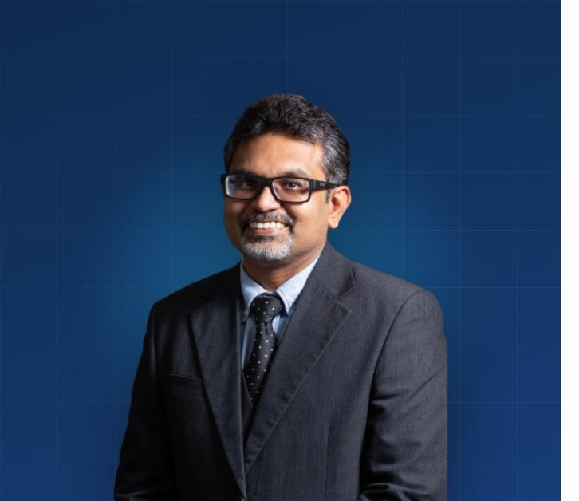

Colorectal Surgery Sabah · Poster
PATIENT-FACING & SPECIALIST WEB PRESENCE
Sabah's Only Colorectal Surgeon, Now Leading With Robotic Precision
A rebuilt website for Datuk Dr. Ratha Krishnan Sriram at Gleneagles Kota Kinabalu, backed by a managed Facebook, Instagram and YouTube presence.

By the numbers
1Only Colorectal Surgeon in Sabah
15+ yrsSurgical experience since 2005
da VinciRobotic system at Gleneagles KK
4Service pages: Colorectal, General, Endoscopy, GI Lab
1.1KFacebook followers, actively managed
66Videos on the managed YouTube channel
Robotic-led site rebuild
Custom SVG explainer graphic
Real clinic photography
WhatsApp click-to-chat
Managed Facebook, Instagram & YouTube
colorectalsurgerysabah.my
Read the full case study →